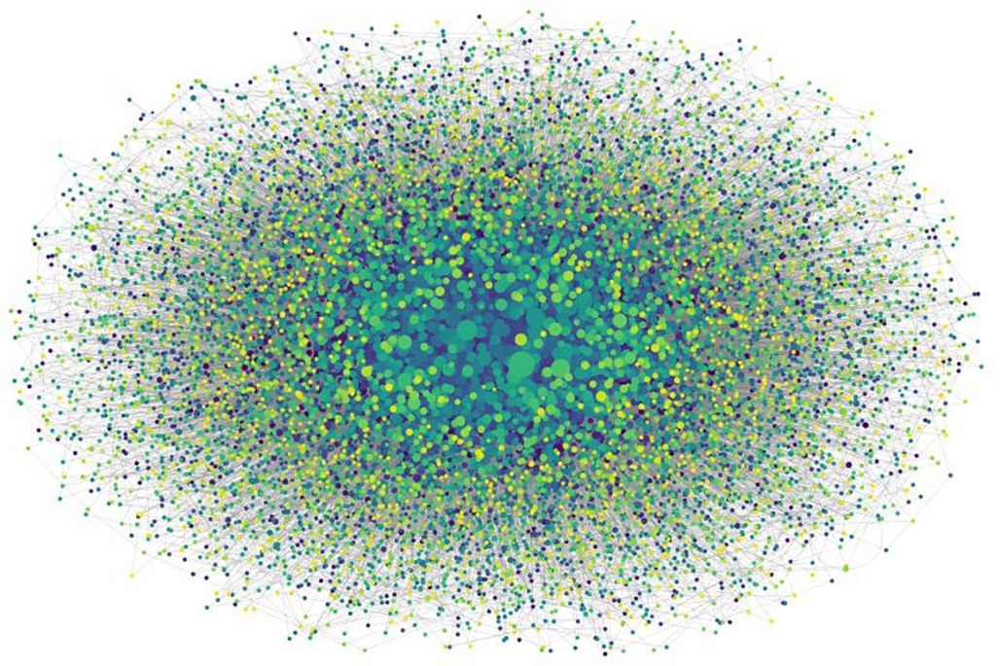
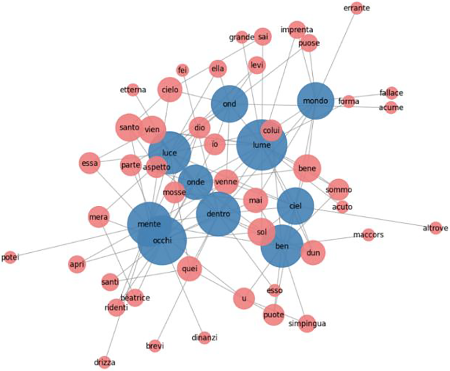
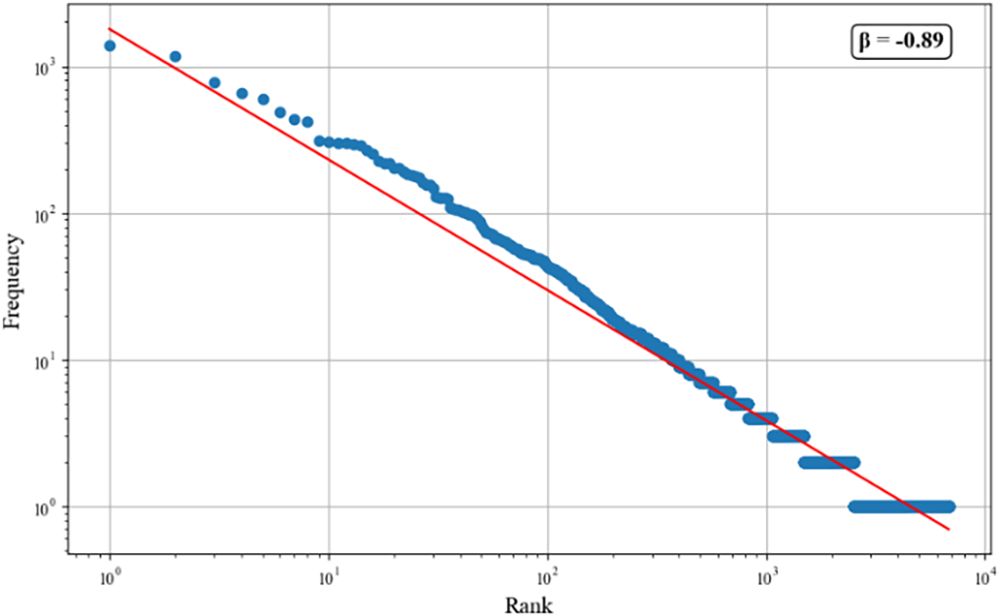
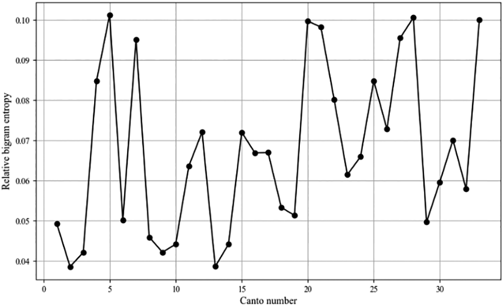

The Divine Comedy as a Complex System
Introduction
This project started from a simple question: what would happen if you treated a 700-year-old poem like a complex system? Together with Dr Brown, I applied network analysis, some statistical analysis and entropy analysis to Dante Alighieri's Divine Comedy. Maths and engineering use these techniques more often than the humanities do, but they have interesting applications there too. The goal was to see whether they could show something useful about the structure of the text: how words relate to each other, how linguistically diverse and predictable the poem is, and how that varies across the canticles. The work sits inside the growing field of multilingual digital humanities scholarship, and we published the full paper in the ACM Journal on Computing and Cultural Heritage.
I've made the codebase public on GitHub. It's a Python pipeline that takes the raw Project Gutenberg text and applies our analysis methods to it.
Preprocessing
The source text is the Divina Commedia from Project Gutenberg. Before touching the text, we tried to keep any alterations to a minimum. The results only mean something if the underlying text still does. So preprocessing was conservative. I split the poem into its three cantiche (Inferno, Purgatorio, Paradiso), stripped the canti headings, punctuation, and numbers, and lowercased everything. There was no lemmatisation. Modern Italian NLP tools target contemporary Italian, not Dante's 14th-century Florentine vernacular. Hence, running them over the text risked introducing more error. I handled stop-word removal the same way, with a small curated list alongside NLTK's generic Italian stopwords. I chose this list to include many common filler words.
Network Analysis
For the network analysis, each cantica became a word-adjacency network. Every word is a node, and an edge connects two words that appear next to each other, weighted by how often that pairing occurs. From these networks I computed eigenvector, degree, and betweenness centrality for every word, then built subgraphs from the ten highest eigenvector-centrality words in each cantica and their five most strongly connected neighbours.

Figure 1. Word adjacency network of the Divine Comedy. The larger the node, the more words connected to it.
Table 1 lists the ten highest-ranked words by each centrality measure, per cantica.
| Eigenvector Centrality | Degree Centrality | Betweenness Centrality | |
|---|---|---|---|
| Inferno | maestro, duca, poco, buon, sanza, dissi, mondo, ben, loco, parte | maestro, duca, poco, ben, terra, fuor, mondo, mai, loco, occhi | maestro, poco, duca, mai, fuor, ben, terra, mondo, vedi, loco |
| Purgatorio | occhi, ben, gente, sanza, poco, ond, prima, va, veder, terra | occhi, ben, gente, sanza, poco, prima, ond, esser, fuor, onde | occhi, ben, sanza, prima, fuor, poco, gente, onde, terra, mai |
| Paradiso | luce, occhi, ben, onde, lume, mente, mondo, ciel, ond, dentro | occhi, ben, mondo, dio, onde, luce, prima, lume, mente, ciel | occhi, mondo, ben, prima, onde, dio, luce, lume, ciel, donna |
One result stood out: 'maestro' (teacher) tops all three centrality measures in Inferno, which tracks with Virgil's role as Dante's guide through hell. Its centrality then drops through Purgatorio and Paradiso as Virgil's narrative importance fades. The subgraph below is from Paradiso. The thematic shift shows up directly in the words clustered there: 'ciel' and 'luce' (sky and light) replace the earthbound 'terra' and 'gente' (earth and people) that dominate Purgatorio.

Figure 2. Subgraph of the Paradiso word adjacency network, showing the five highest weighted connections (red) for each of the ten highest eigenvector centrality words (blue).
Statistical Analysis
On the statistical side, I looked at word frequency against Zipf's law, which says a word's frequency should be roughly inversely proportional to its rank. A handful of words carry most of the text, and a long tail occurs once or twice. Dante's poem follows this closely in every cantica, with a consistent slope (β) between −0.89 and −0.91. That consistency across three otherwise different sections of the poem is interesting on its own. The more telling number is how that β compares to other Italian literature: earlier studies of modern Italian corpora put β closer to −0.95 to −1.05. Dante's is noticeably higher, so his vocabulary is more varied than standard modern Italian. That fits what's known about the text: Dante wrote it in 14th-century Florentine vernacular, with looser grammatical rules, dialect words, and abbreviations a modern text wouldn't use.

Figure 3. Zipf's plot for Inferno. The red line is the power-law fit, with β = −0.89.
Entropy Analysis
The last method used Shannon entropy over bigrams (word pairs) to measure how predictable word order is, canto by canto. For each canto, I compared the entropy of the actual bigram sequence to the entropy of the same words shuffled into random order, averaged over five shuffles. This gives a relative entropy score: the bigger the gap, the more Dante's word order departs from randomness.
Paradiso's entropy runs higher on average than Inferno or Purgatorio, particularly in its final third. The plot below shows clear peaks around canti 25 and 30. These canti deal with Dante's most abstract theological visions, where word order carries more of the meaning and Dante constrains the language more tightly than in the surrounding canti.

Figure 4. Timeseries of relative bigram entropy for each canto in Paradiso.
Conclusion
The three methods point the same way from different angles. Network analysis showed that key words such as 'maestro' in Inferno act as hubs in the word adjacency network, tying closely to Dante's narrative in each cantica. Statistical analysis confirmed the poem follows a Zipfian distribution and showed a higher level of linguistic diversity than modern standard Italian, so Dante's lexicon is both rich and complex. Entropy analysis picked up real variation in word ordering between canti. In Inferno, entropy peaks around canto 25, where the thieves in the Eighth Circle shift between human and serpent form in a tightly structured sequence, and troughs around canto 24, a more dialogue-driven canto where Virgil's exclamations keep introducing new word combinations. As far as we can tell, we are the first to apply network analysis to the poem, and the first to treat Dante's work as a Complex System at all.
The approach has real limitations. Reducing the poem to word adjacency loses context. It cannot see how characters, themes, and motifs interact across a whole canto or cantica, only across a handful of neighbouring words. Removing stop-words carries a similar cost. Words such as 'il' and 'e' carry little meaning on their own, and stripping them out risks losing some of the syntactic rhythm that holds the poem together. There is also no standard preprocessing pipeline for medieval Italian text. Different studies tokenise, lemmatise, and handle punctuation differently, which makes it hard to compare results across papers.
None of this replaces a close reading of the text. It offers a different, quantitative way into it, and it is a reminder that Virgil's authority as Dante's guide shows up just as clearly in the word statistics as it does on the page.
Paper
Find the full methodology and results here:
Code and data: github.com/CalebA03/DivineComedyAsACompexSystem